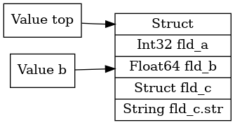
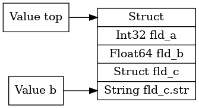

Guides¶
Manipulating Value¶
#include <pvxs/data.h>
using namespace pvxs;
pvxs::Value is the primary data container type used with PVXS.
A pvxs::Value may be obtained via the remote peer (client or server),
or created locally. See Value Container API, Common Type Definitions and Defining Custom Types.
pvxs::Value is a safe pointer-like object which may reference
a field in an underlying data structure.
Either a (sub)structure, or a leaf field.
Referencing fields¶
Conceptually, each data structure may be thought of as an array of nodes. Each node representing either a (sub) structure field, of a leaf field.
A Value may reference any node/field.
Either a (sub)structure node, or a leaf field.
Value empty;
assert(!empty.valid());
assert(!empty); // equivalent short-hand
Above empty does not reference any underlying data structure,
and so is an “invalid” or “empty” reference.
Value top = TypeDef(TypeCode::Struct, {
members::Int32("fld_a"),
members::Float64("fld_b"),
members::Struct("fld_c", {
members::String("str"),
}),
}).create();
Value x = top["fld_b"];

Above top references the anonymous top level structure field,
while x references the “fld_b” field.
Note
operator= for anything other than Value is a short-hand notation for pvxs::Value::from().
Assigning a Value to a Value changes which underlying field is referenced.
x = top["fld_c.str"];

Now x references the str member of the fld_c sub-structure.
Field storage¶
Fields other than Struct have associated storage,
which may be accessed with the pvxs::Value::as() and pvxs::Value::from() methods.
x = "hello world";
// ... or equivalently
x.from("hello world");
Here the storage of fld_c.str has been modified from the initial empty string
to “hello world”. (Note that from() also “marks” this field as changed)
assert(x.as<std::string>() == "hello world");
The as<T>() method fetches the currently stored value.
Both from<T>() and as<T>() may perform implicit type conversions.
x.as<int32_t>(); // throws pvxs::NoConvert
x = "42";
assert(x.as<int32_t>() == 42); // Ok!
x = 43; // Ok!
assert(x.as<std::string>() == "43");
Arrays of simple types¶
Array fields are handled with the pvxs::shared_array array container,
which is intended to behave similarly to std::vector.
The primary differences are the use of reference counting to avoid copies.
And support for void vs. non-void, and const vs. non-const element types.
When stored through a Value, a shared_array must be const.
This prevents unexpected modification of arrays which may be shared with other code.
Often a shared_array needs to be non-const when being initially populated.
The pvxs::shared_array::freeze() and pvxs::shared_array::thaw() methods can change
an array between const and non-const.
shared_array<int32_t> iarr({1, 2, 3});
iarr[2] = 5;
shared_array<const int32_t> const_iarr(iarr.freeze());
// cleared 'iarr' like std::move('iarr')
const_iarr[2] = 4; // compile error!
Here a non-const array is allocated and modified by setting the third element to 5.
Then iarr, the one (and only) reference to this array is “frozen” into an immutable const array.
// Value top;
Value top = TypeDef(TypeCode::Struct, {
members::Int32A("farr"),
}).create();
top["farr"] = const_iarr;
top["farr"].from(const_iarr); // equivalent
Now a reference to the immutable array has been placed into the “farr” field.
auto other(top["farr"].as<shared_array<const int32_t>>();
assert(const_iarr.data() == other.data());
And finally, another reference is retrieved from the “farr” field.